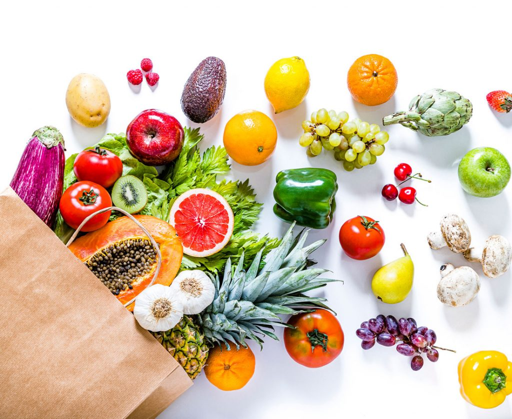

Lifestyle
Enhance Your Well-being Beyond Fitness and Nutrition
A wholesome lifestyle contributes to the maintenance and enhancement of individuals' health and overall well-being, offering effective means to alleviate stress. Numerous governmental and non-governmental entities are dedicated to advocating for healthy lifestyles. Adopting a healthy lifestyle is a continual endeavor, encompassing nutritious dietary habits, regular physical exercise, weight control, and effective stress management techniques.
